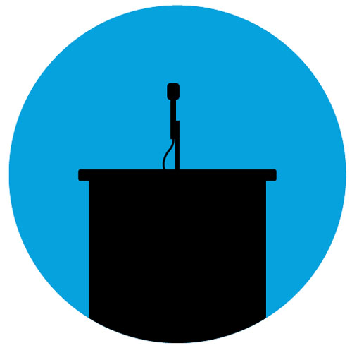

CRS News
CRS Youtube Live

Debates
CRS News
CRS Youtube Live
Debates
Cambridge Romanian Society is the official hub for Romanians in Cambridge. Members of the University of Cambridge are our main focus, but every Romanian is welcome to join us.
We have been founded on 1 December 2007 and we have since become a platform for social and academic interaction for Romanians. Our ultimate goal is to ensure a coherent space for the exchange of ideas and experiences, to the benefit of each individual, of the University and of Romania.
Cambridge Romanian Society is registered with the Societies Syndicate of the University of Cambridge (check the directory of the Cambridge University Students Union here).